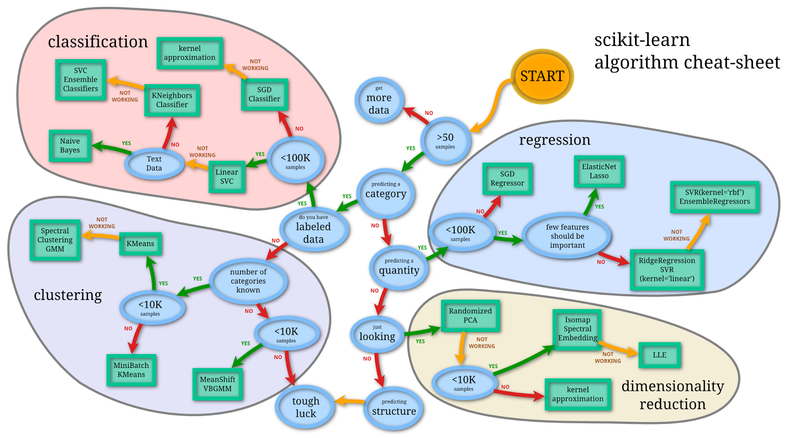

Quick start to machine learning¶
This is condensed from the Intro to Machine Learning Kaggle course.
Build a model
Validate a model
Overfitting and underfitting
A more sophisticated model: Random forests
#[1]
import numpy as np # linear algebra
import pandas as pd # data processing, CSV file I/O (e.g. pd.read_csv)
How do we know which machine learning models to use?
 (source)
Our Scenario¶
Your cousin has made millions of dollars speculating on real estate. He’s offered to become business partners with you because of your interest in data science. He’ll supply the money, and you’ll supply models that predict how much various houses are worth.
You ask your cousin how he’s predicted real estate values in the past. and he says it is just intuition. But more questioning reveals that he’s identified price patterns from houses he has seen in the past, and he uses those patterns to make predictions for new houses he is considering.
Machine learning works the same way. We’ll start with a model called the Decision Tree. There are fancier models that give more accurate predictions, but decision trees are easy to understand.
For simplicity, we’ll start with the simplest possible decision tree.

First Decision Trees¶
It divides houses into only two categories. The predicted price for any house under consideration is the historical average price of houses in the same category.
We use data to decide how to break the houses into two groups, and then again to determine the predicted price in each group. This step of capturing patterns from data is called fitting or training the model. The data used to fit the model is called the training data.
We will get to the details of how the model is fit (e.g. how to split up the data). After the model has been fit, you can apply it to new data to predict prices of additional homes.
Improving the Decision Tree¶
You can capture more factors affecting home price using a tree that has more “splits.” These are called “deeper” trees. A decision tree that also considers the total size of each house’s lot might look like this:

Depth 2 Tree¶
You predict the price of any house by tracing through the decision tree, always picking the path corresponding to that house’s characteristics. The predicted price for the house is at the bottom of the tree. The point at the bottom where we make a prediction is called a leaf.
The splits and values at the leaves will be determined by the data, so it’s time for you to check out the data you will be working with.
Load the data!¶
#[2]
# save filepath to variable for easier access
melbourne_file_path = 'data/melb_data.csv'
# read the data and store data in DataFrame titled melbourne_data
melbourne_data = pd.read_csv(melbourne_file_path)
melbourne_data.head()
# print a summary of the data in Melbourne data
# melbourne_data.describe()
Suburb |
Address |
Rooms |
Type |
Price |
Method |
SellerG |
Date |
Distance |
Postcode |
... |
Bathroom |
Car |
Landsize |
BuildingArea |
YearBuilt |
CouncilArea |
Lattitude |
Longtitude |
Regionname |
Propertycount |
|
|---|---|---|---|---|---|---|---|---|---|---|---|---|---|---|---|---|---|---|---|---|---|
0 |
Abbotsford |
85 Turner St |
2 |
h |
1480000.0 |
S |
Biggin |
3/12/2016 |
2.5 |
3067.0 |
... |
1.0 |
1.0 |
202.0 |
NaN |
NaN |
Yarra |
-37.7996 |
144.9984 |
Northern Metropolitan |
4019.0 |
1 |
Abbotsford |
25 Bloomburg St |
2 |
h |
1035000.0 |
S |
Biggin |
4/02/2016 |
2.5 |
3067.0 |
... |
1.0 |
0.0 |
156.0 |
79.0 |
1900.0 |
Yarra |
-37.8079 |
144.9934 |
Northern Metropolitan |
4019.0 |
2 |
Abbotsford |
5 Charles St |
3 |
h |
1465000.0 |
SP |
Biggin |
4/03/2017 |
2.5 |
3067.0 |
... |
2.0 |
0.0 |
134.0 |
150.0 |
1900.0 |
Yarra |
-37.8093 |
144.9944 |
Northern Metropolitan |
4019.0 |
3 |
Abbotsford |
40 Federation La |
3 |
h |
850000.0 |
PI |
Biggin |
4/03/2017 |
2.5 |
3067.0 |
... |
2.0 |
1.0 |
94.0 |
NaN |
NaN |
Yarra |
-37.7969 |
144.9969 |
Northern Metropolitan |
4019.0 |
4 |
Abbotsford |
55a Park St |
4 |
h |
1600000.0 |
VB |
Nelson |
4/06/2016 |
2.5 |
3067.0 |
... |
1.0 |
2.0 |
120.0 |
142.0 |
2014.0 |
Yarra |
-37.8072 |
144.9941 |
Northern Metropolitan |
4019.0 |
#[3]
melbourne_data.shape
(13580, 21)
Selecting Data for Modeling¶
The dataset has too many variables to wrap your head around, or even to print out nicely. How can you pare down this overwhelming amount of data to something you can understand?
We’ll start by picking a few variables using our intuition. There are also statistical techniques to automatically prioritize variables that we are not covering.
To choose variables/columns, we’ll need to see a list of all columns in the dataset. That is done with the columns property of the DataFrame (the bottom line of code below).
#[4]
melbourne_data.columns
Index(['Suburb', 'Address', 'Rooms', 'Type', 'Price', 'Method', 'SellerG',
'Date', 'Distance', 'Postcode', 'Bedroom2', 'Bathroom', 'Car',
'Landsize', 'BuildingArea', 'YearBuilt', 'CouncilArea', 'Lattitude',
'Longtitude', 'Regionname', 'Propertycount'],
dtype='object')
The Melbourne data has some missing values (some houses for which some variables weren’t recorded). We will take the simplest option for now, and drop houses from our data.
#[5]
# dropna drops missing values
melbourne_data = melbourne_data.dropna(axis=0)
Selecting The Prediction Target¶
You can pull out a variable using square brackets: ['col_name'].
This single column is stored in a Series, which is broadly like a
DataFrame with only a single column of data.
We’ll use this bracket notation to select the column we want to predict
(Price), which is called the prediction target. By convention,
the prediction target is called y. Therefore, the code we need to
save the house prices in the Melbourne data is the following:
#[6]
y = melbourne_data['Price']
Choosing “Features”¶
The columns that are inputted into our model (and later used to make predictions) are called features. In our case, those would be the columns used to determine the home price. Sometimes, you will use all columns except the target as features. Other times you’ll be better off with fewer features.
For now, we’ll build a model with only a few features. Later on you’ll see how to iterate and compare models built with different features.
By convention, this data is called X.
#[7]
melbourne_features = ['Rooms', 'Bathroom', 'Landsize', 'Lattitude', 'Longtitude']
X = melbourne_data[melbourne_features]
X.head()
Rooms |
Bathroom |
Landsize |
Lattitude |
Longtitude |
|
|---|---|---|---|---|---|
1 |
2 |
1.0 |
156.0 |
-37.8079 |
144.9934 |
2 |
3 |
2.0 |
134.0 |
-37.8093 |
144.9944 |
4 |
4 |
1.0 |
120.0 |
-37.8072 |
144.9941 |
6 |
3 |
2.0 |
245.0 |
-37.8024 |
144.9993 |
7 |
2 |
1.0 |
256.0 |
-37.8060 |
144.9954 |
Building Your Model¶
You will use the
`scikit-learn <https://scikit-learn.org/stable/index.html>`__
library to create your models. When coding, this library is written as
sklearn, as you will see in the sample code. Scikit-learn is easily
the most popular library for modeling the types of data typically stored
in DataFrames.
The steps to building and using a model are: * Define: What question are you asking? What type of model bests answers the question? A decision tree? Some other type of model? Some other parameters of the model type are specified too. * Fit: Capture patterns from provided data. This is the heart of modeling. * Predict: Just what it sounds like * Evaluate: Determine how accurate the model’s predictions are.
Here is an example of defining a decision tree model with
scikit-learn and fitting it with the features and target variable.
#[8]
from sklearn.tree import DecisionTreeRegressor
# Define model. Specify a number for random_state to ensure same results each run
melbourne_model = DecisionTreeRegressor(random_state=1)
# Fit model
melbourne_model.fit(X, y)
DecisionTreeRegressor(random_state=1)
We set random_state=1 in order to remove variability from run to
run.
Many machine learning models allow some randomness in model training.
Specifying a number for random_state ensures you get the same
results in each run.
A side note on global optimum: The problem of learning an optimal decision tree is known to be NP-complete under several aspects of optimality and even for simple concepts. Consequently, practical decision-tree learning algorithms are based on heuristic algorithms such as the greedy algorithm where locally optimal decisions are made at each node. Such algorithms cannot guarantee to return the globally optimal decision tree. This can be mitigated by training multiple trees in an ensemble learner, where the features and samples are randomly sampled with replacement.
We now have a fitted model that we can use to make predictions.
In practice, you’ll want to make predictions for new houses coming on the market rather than the houses we already have prices for. But we’ll make predictions for the first few rows of the training data to see how the predict function works.
#[9]
print("Making predictions for the following 5 houses:")
print(X.head())
print("The predictions are")
y_pred = melbourne_model.predict(X.head())
print(y_pred)
Making predictions for the following 5 houses:
Rooms Bathroom Landsize Lattitude Longtitude
1 2 1.0 156.0 -37.8079 144.9934
2 3 2.0 134.0 -37.8093 144.9944
4 4 1.0 120.0 -37.8072 144.9941
6 3 2.0 245.0 -37.8024 144.9993
7 2 1.0 256.0 -37.8060 144.9954
The predictions are
[1035000. 1465000. 1600000. 1876000. 1636000.]
You’ve built a model. But how good is it?
Model Validation¶
In most applications, the relevant measure of model quality is predictive accuracy. There are many metrics for summarizing model quality, but we’ll start with one called Mean Absolute Error.
The Mean Absolute Error (MAE) is on average how far off each prediction is from the actual value.
Here is how we calculate the mean absolute error:
#[10]
from sklearn.metrics import mean_absolute_error
predicted_home_prices = melbourne_model.predict(X)
mean_absolute_error(y, predicted_home_prices)
1115.7467183128902
The Problem with “In-Sample” Scores¶
The measure we just computed can be called an “in-sample” score. We used a single “sample” of houses for both building the model and evaluating it. This is bad. If our model doesn’t hold when it sees new data, the model would be very inaccurate when used in practice.
Since a model’s practical value come from making predictions on new data, we measure performance on data that wasn’t used to build the model. The most straightforward way to do this is to exclude some data from the model-building process, and then use those to test the model’s accuracy on data it hasn’t seen before. This data is called validation data.
Coding It¶
The scikit-learn library has a function train_test_split to break up
the data into two pieces. We’ll use some of that data as training data
to fit the model, and we’ll use the other data as validation data to
calculate mean_absolute_error. This way, we can evaluate our model
with data that was not used to create it.
Here is the code:
#[11]
from sklearn.model_selection import train_test_split
# split data into training and validation data, for both features and target
# The split is based on a random number generator. Supplying a numeric value to
# the random_state argument guarantees we get the same split every time we
# run this script.
train_X, val_X, train_y, val_y = train_test_split(X, y, random_state = 0)
We can use .shape to see that size of the training data set it much
larger than the validation data set.
#[12]
train_y.shape
(4647,)
#[13]
val_y.shape
(1549,)
#[14]
# Define model
melbourne_model = DecisionTreeRegressor()
# Fit model
melbourne_model.fit(train_X, train_y)
DecisionTreeRegressor()
#[15]
# get predicted prices on validation data
val_predictions = melbourne_model.predict(val_X)
print(mean_absolute_error(val_y, val_predictions))
273824.9255433613
Your mean absolute error for the in-sample data was about 1000 dollars.
Out-of-sample it is more than 250,000 dollars.
This is the difference between a model that is almost exactly right, and one that is unusable for most practical purposes. As a point of reference, the average home value in the validation data is 1.1 million dollars. So the error in new data is about a quarter of the average home value.
Let’s find ways to improve this model!
Experimenting With Different Models, Underfitting and Overfitting¶
Now that you have a reliable way to measure model accuracy, you can experiment with alternative models and see which gives the best predictions. But what alternatives do you have for models?
You can see in scikit-learn’s documentation that the decision tree model has many options. The most important options determine the tree’s depth. A tree’s depth is a measure of how many splits it makes before coming to a prediction.
If a tree has 10 splits, data will be split into up to \(2^{10}\) groups of houses, or 1024 leaves.
Overfitting: When we divide the houses amongst many leaves, we also have fewer houses in each leaf. Leaves with very few houses may make very unreliable predictions for new data.
Underfitting: If our tree very shallow, it doesn’t divide up the houses into very distinct groups. Resulting predictions may be far off for most houses, even in the training data (and it will be bad in validation too for the same reason). When a model fails to capture important distinctions and patterns in the data, so it performs poorly even in training data, that is called underfitting.
We want to find the model between underfitting and overfitting. Visually, we want the low point of the (red) validation curve.
Example¶
Let’s use max_depth argument to control overfitting vs underfitting.
We can use a utility function to help compare MAE scores from different
values for max_depth:
#[16]
def mae(max_depth, train_X, val_X, train_y, val_y):
model = DecisionTreeRegressor(max_depth=max_depth, random_state=0)
model.fit(train_X, train_y)
preds_val = model.predict(val_X)
mae = mean_absolute_error(val_y, preds_val)
return(mae)
We can use a for-loop to compare the accuracy of models built with different values for max_depth.
#[17]
# compare MAE with differing values of max_depth
for max_depth in [1, 5, 10, 20, 50]:
my_mae = mae(max_depth, train_X, val_X, train_y, val_y)
print("Max depth: %d \t\t Mean Absolute Error: %d" %(max_depth, my_mae))
Max depth: 1 Mean Absolute Error: 439583
Max depth: 5 Mean Absolute Error: 299691
Max depth: 10 Mean Absolute Error: 252176
Max depth: 20 Mean Absolute Error: 272924
Max depth: 50 Mean Absolute Error: 271598
Of the options listed, what is the optimal max depth?
#[18]
# Let's run the optimal model with 500 notes
melbourne_model = DecisionTreeRegressor(max_depth=10, random_state=0)
melbourne_model.fit(train_X, train_y)
DecisionTreeRegressor(max_depth=10, random_state=0)
#[19]
# Can we get a visual?
import graphviz
from sklearn.tree import export_graphviz
dot_data = export_graphviz(melbourne_model, out_file=None,
feature_names=melbourne_features)
graph = graphviz.Source(dot_data)
graph.render("DecisionTree")
'DecisionTree.pdf'
Here’s the takeaway: Models can suffer from either: - Overfitting: capturing spurious patterns that won’t recur in the future, leading to less accurate predictions, or - Underfitting: failing to capture relevant patterns, again leading to less accurate predictions.
We use validation data, which isn’t used in model training, to measure a candidate model’s accuracy. This lets us try many candidate models and keep the best one.
Random Forests¶
Decision trees leave you with a difficult choice. A deep tree with lots of leaves will overfit because each prediction is coming from historical data from only the few houses at its leaf. But a shallow tree with few leaves will perform poorly because it fails to capture as many distinctions in the raw data.
Even today’s most sophisticated modeling techniques face this tension between underfitting and overfitting. But, many models have clever ideas that can lead to better performance. We’ll look at the random forest as an example.
The random forest algorithm uses many trees, and it makes a prediction by averaging the predictions of each component tree. It generally has much better predictive accuracy than a single decision tree and it works well with default parameters. If you keep modeling, you can learn more models with even better performance, but many of those are sensitive to getting the right parameters.
A random forest is a meta estimator that fits a number of decision tree
models on various sub-samples of the dataset and uses averaging to
improve the predictive accuracy and control over-fitting. The sub-sample
size is controlled with the max_samples parameter if
bootstrap=True (default), otherwise the whole dataset is used to
build each tree.
We build a random forest model similarly to how we built a decision tree
in scikit-learn - this time using the RandomForestRegressor class
instead of DecisionTreeRegressor.
#[20]
from sklearn.ensemble import RandomForestRegressor
forest_model = RandomForestRegressor(random_state=1)
forest_model.fit(train_X, train_y)
melb_preds = forest_model.predict(val_X)
print(mean_absolute_error(val_y, melb_preds))
207190.6873773146
Conclusion¶
There is likely room for further improvement, but this is a big improvement over the best decision tree error of 250,000. There are parameters which allow you to change the performance of the Random Forest much as we changed the maximum depth of the single decision tree. But one of the best features of Random Forest models is that they generally work reasonably even without this tuning.
Your Turn¶
Try Using a Random Forest model yourself and see how much it improves your model.
Visit https://www.kaggle.com/learn for Intermediate ML and Intro to Deep Learning courses.